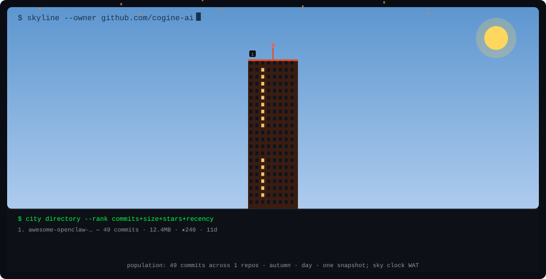
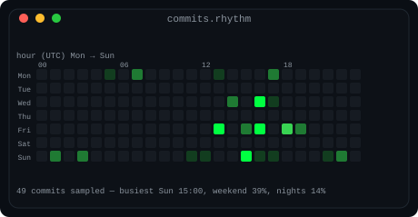

COGINE · OPEN SOURCE SNAPSHOT
一座公开仓库，三张真实数据卡
awesome-openclaw-zh 内容库。采集：（UTC，台湾时间为 UTC+8）。这是一张固定公开数据快照，没有自动刷新。
统计范围仅限上表一个仓库，不代表 Cogine 组织或任何个人的全部活动；不可公开的仓库未纳入。没有相同口径旧快照，因此不计算 Star 增速。
一座仓库，一栋开源小楼
楼高是上游对提交数、Git 存储量、Star 与推送时间的组合排序，不能解释成收入、效率或增长率。本例只有一个公开仓库，因而不作项目间排名。天空沿用作者 WAT（UTC+1）时钟；本页只是一张固定快照。

下载 SVG
最近提交的时间节奏
每个仓库最多取默认分支最近 100 条提交，包含合并提交；按 UTC 分组，不是组织贡献日历、人数、工时或过去一年的完整活跃度。

下载 SVG
查看公开 API 数据 · 复现脚本 · 上游 MIT 许可